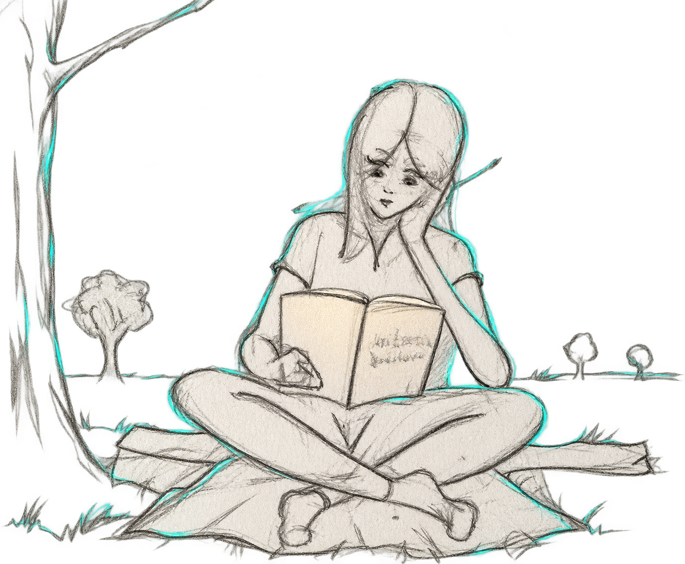
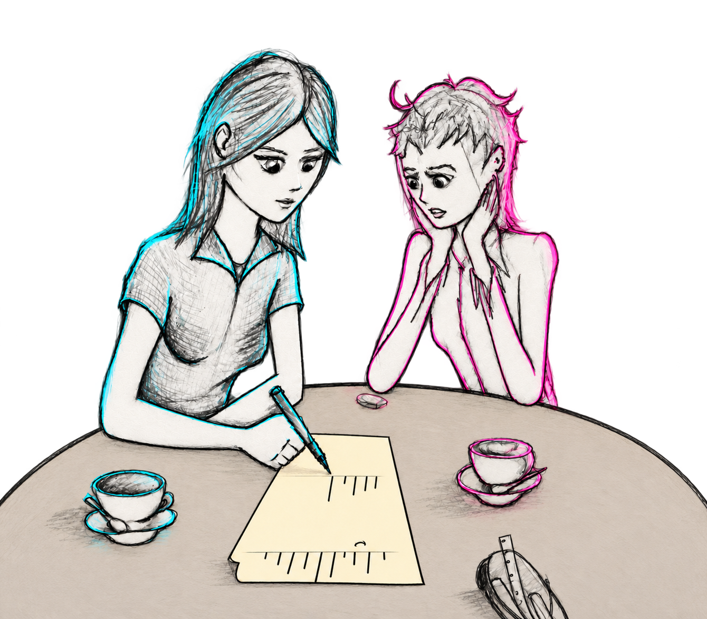

CNOT
Caterina e Laura sono colleghe presso un'azienda di logistica. Per entrambe si tratta di una posizione temporanea. Caterina è già formata e sta cercando di occupare la posizione per cui ha studiato, mentre Laura si sta ancora specializzando e lavora per mantenere sé stessa e la sorella. Il caso e il destino le uniscono per affrontare insieme un'esperienza di cui faranno fatica a separare le emozioni vissute dall'una da quelle vissute dall'altra. Un'avventura al limite dell'entanglement

Il concept
Come per Cnot 1.7 gli eventi procedono da soli e i personaggi si muovono guidati dai tratti principali della loro personalità. Per ottenere questo risultato ho fatto due atti di fiducia. Il primo è verso una mia personalissima interpretazione delle teorie di Jung (lo psicologo intendo) e il seconda ivece è verso la classificazione NEO-PI-R dei profili di personalità.
Il risultato mi ha soddisfatto molto e il risultato è il racconto CNOT
Ambientazione
Caterina è intrappolata, Laura la deve salvare. Sembrerebbe un classico, ma c'è un particolare: le mura della prigione non sono di cemento e l'unico modo di fuggire è per effetto tunnel. Questa è l'ambientazione di CNOT, quella che potrei definire il delirio di Schrodinger o la visione di Dirac.
Temi
C'è un'accelerazione tecnologica che porta ad un lento eclissarsi della scienza. C'è una richiesta di giustizia che a volte non tiene conto della delicatezza su cui si basa l'equilibrio. Poi ci sono i legami e la loro precarietà nel marketing della vita.
Personaggi
Laura e Caterina sono le protagoniste indiscusse di questa avventura d'esordio. Sono personaggi o persone NEO-PI-R. Accanto a loro si muovono personaggi presi sia dal mondo della scienza, come il professor Shor e Eva che dalla mitologia come il sistema PzIA il cui nome richiama la Pizia.
